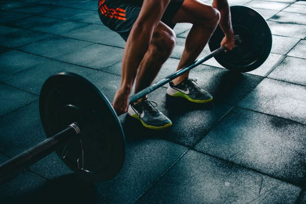

I like exercising because it helps relieve stress inside me, and it gets my day started.
Science shows there are many benefits to exercising, and I recommend for everyone to get
some kind of physical activity. Whether it is running, strength training, or even walking,
exericisng will improve your mood and make you feel more energetic.
I have been exercising daily since I was in high school. At first, I started only taking
my dogs for walks around my neighborhood, but overtime, I started to incorporate strength
training into my routine too. I enjoy my weekly exercising schedule.
What does my weekly schedule look like?
My weekly schedule consists of walking at least five days per week and doing strength
training at least three days per week. I try to do my strength training on Mondays, Wednesdays, and
Fridays for consistency. Having a consistent schedule helps me remember when I need to exercise, and if
I should walk or do strength training.
Would I consider adding in anything else to my schedule?
I think I could add running to my schedule. I used to run when I was in high school,
but I do not do it as consistently as I did before. I am hoping sometime this year I can
get back into running especially because I have a new puppy now, and he loves to run.
When can you start Exercising?
During the morning.
You can exercise if you have during the morining. In fact, if exercising is the first thing you do
when you wake up, it can get your entire day started. I recommend exercising in the morning if you can.
It will make you feel more awake and energetic throughout your day.
What if you cannot exercise during the morning?
If you cannot exercise during the morning, then that is fine. You can still exercise later in the day
giving you the same benefits. There have been times when I had to exercise in the afternoon or in the
evening due to my work schedule. However, if I can exercise in the morning, I will do that instead.
Click on this link for more information on
the benefits of exercising in the morning.

Don't wait start Exercising today!!!
Where can you Exercise?
At Home.
One option is to simply exercise at your house if you can. This is what I do, and
it helps that I do not have to drive anywhere just to exercise. If you have a pair of dumbbells,
then you can easily do a workout in your own place of living.
At a Gym.
Going to a gym is another great option. There is likely a gym in your area, and
they have the equipment you need to get started on exercising. If you prefer to not
workout at your home, then you can become a member at your local gym instead.
Some gyms are better than others so it is recommended to do some research.
Going to the Gym is also benficial!!!
Conclusion.
Overall, it does not matter where you get your physical activity. However, what does matter is
if you are getting any physical activity at all. The best advice I can give is pick a location and
start building a schedule you can follow daily.
Why Exercise?
Exercise is proven to have many benefits!
The main reason to exercise is for your health. Studies show exercising has many benefits
such as reducing your anxiety, increasing your energy, making you feel more awake, improve your ability
to focus, and more. Not exercising to lead to a greater risk of cancer and studies show that people who do
not exercise have a worse mortality rate. It is widely recommended to exercise at least five days per week.
Exercising provides many benefits!!!
How to get started Exercising
Here is what I recommend to get started.
Develop a schedule
Get started on an exercise program
Have a consistent sleep schedule
Develop a good diet
Start slow and work your way up
It is a Process.
Everybody starts from somewhere. My number one advice is to start with something you know
you can handle and work your way up when you get used to it. If you try to do too much,
then you will likely injure yourself. Additionally, it is vital to have a good diet.
You cannot workout a bad diet. If you have a good diet and a good workout routine, then
you will see significant improvements in your well-being.
How to Motivate Yourself.
My tip on this is to wake up every morning and tell yourself that you are
going to get this workout in. Start on it as soon as you can because if you procrastinate, then
the chances of you getting a workout in decrease. If you have a plan and stick with it, then you will
feel much better about yourself.